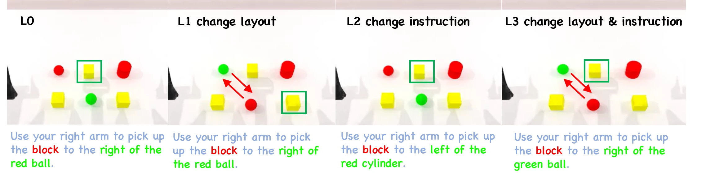
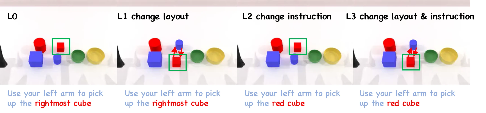
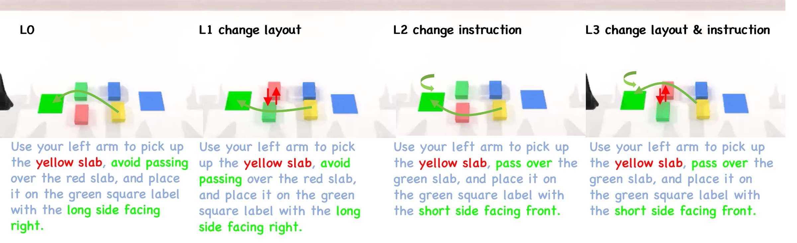
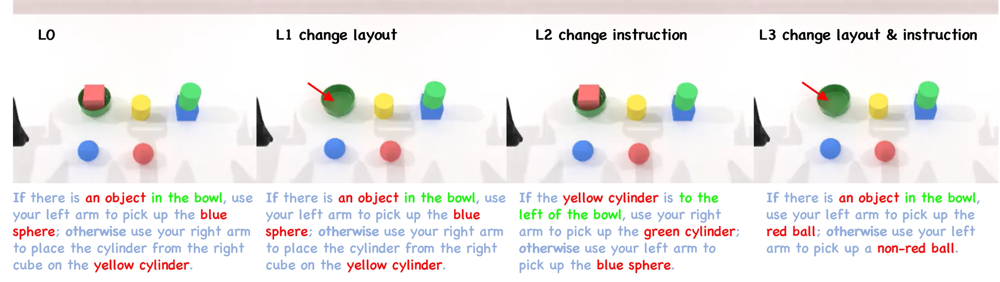
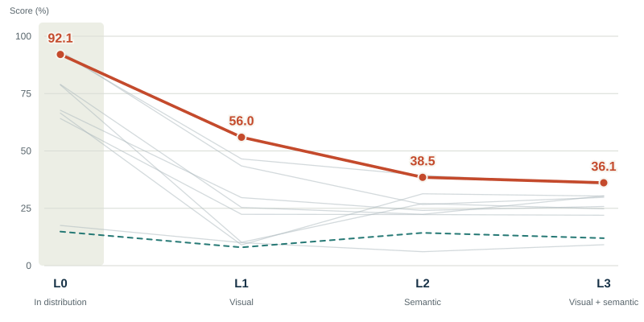
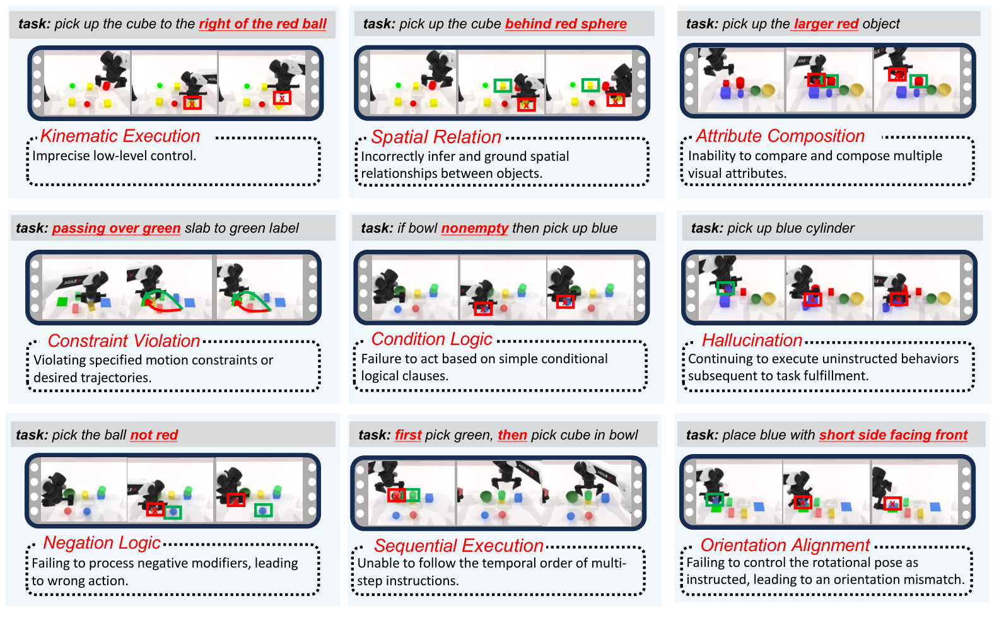
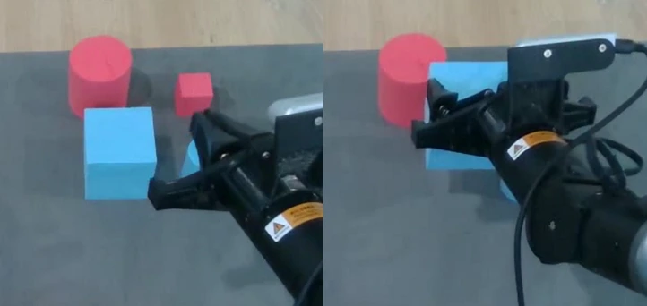

Visual shortcuts break.
In Scene 1, π₀ reaches 98.2% IS at L0 but 0.0% at L1 after layout changes. Task success on a familiar scene can conceal fragile spatial grounding.
1 AutoLab, School of Artificial Intelligence, Shanghai Jiao Tong University
2 Research Lab, Anyverse Dynamics † Corresponding author
When a scene suggests only one task, a robot can succeed while barely using language. RoboFollow asks what happens when the same scene supports different intentions.
Make language necessaryInstruction A selects the lower-right yellow block. Illustrative target highlighting on a scene from the paper.
High task success does not necessarily imply instruction following.
RoboFollow is a diagnostic benchmark built on RoboTwin. Each training scene supports multiple feasible task branches, so the observation alone cannot identify the intended behavior. A four-level protocol isolates visual grounding, semantic recombination, and their combination. Stage-wise Intent and Execution scores distinguish task-selection errors from motor failures.
Across nine fine-tuned VLA and WAM policies, strong in-distribution performance, where attained, does not reliably transfer to the perturbed settings. Stronger VLM backbones, QA co-training, LangForce, and classifier-free guidance do not close this gap in the evaluated configurations.
3.782 bits in RoboFollow vs. 0.880 bits in the equally weighted LIBERO Spatial/Object/Goal/Long suites. Scene entropy is a dataset design measure; see the paper for task grouping.
Simple objects. Familiar motor primitives.
Multiple possible intentions.
Identical yellow blocks must be distinguished by their relation to anchor objects. Moving the anchors tests grounding beyond memorized coordinates.
Spatial prepositions · 16 training tasks
Color, size, shape, and action must be bound together. Shared attributes make any single visual cue insufficient across tasks.
Attribute composition · 16 training tasks
Instructions specify waypoints and final orientations. Reaching a plausible end state is insufficient when the requested procedure is violated.
Waypoints & orientation · 16 training tasks
Short instructions probe sequencing, negation, and conditionals. The robot must evaluate the current scene to decide what to do next.
First / not / if–else · 27 training tasks
The levels isolate different generalization dimensions; they are not a strict difficulty ranking.
The correct object, relation, waypoint, orientation, or logical branch was selected.
The corresponding physical subgoal was completed successfully.
An action-dependent binary completion criterion, averaged equally over tasks within each scene and level.
A finishing stage contributes 20% of IS/ES and checks that the robot stops unrelated actions after completing the instruction.
Nine policies. Four scene families.
Explore the results from Table 1.

All values are percentages. The dashed control is the π₀.₅ empty-language condition. Results characterize the evaluated fine-tuning setup; they do not isolate architecture from training data or optimization.
| Policy | Family | L0 | L1 | L2 | L3 |
|---|---|---|---|---|---|
| π₀.₅ | VLA | 92.1 | 56.0 | 38.5 | 36.1 |
| π₀.₅ · empty language | Control | 14.9 | 8.0 | 14.3 | 12.0 |
| π₀ | VLA | 93.6 | 43.5 | 26.7 | 29.8 |
| GR00T N1.6 | VLA | 64.1 | 22.4 | 22.3 | 22.0 |
| OpenVLA-OFT | VLA | 17.5 | 10.0 | 6.1 | 9.1 |
| XVLA | VLA | 66.5 | 9.1 | 31.3 | 30.3 |
| ACoT-VLA | VLA | 92.7 | 46.5 | 39.4 | 35.5 |
| Lingbot-VLA | VLA | 78.8 | 10.2 | 27.1 | 24.8 |
| Motus | WAM | 67.7 | 29.7 | 24.1 | 25.8 |
| FAST-WAM | WAM | 79.0 | 25.4 | 22.4 | 30.4 |
In Scene 1, π₀ reaches 98.2% IS at L0 but 0.0% at L1 after layout changes. Task success on a familiar scene can conceal fragile spatial grounding.
Qwen3-VL-4B answers 19/20 Scene 2 QA probes correctly. Yet the tested stronger-backbone and QA co-training setup still leaves substantial L1–L3 action-grounding failures.
LangForce yields marginal changes; classifier-free guidance at scales 1.2 and 1.5 degrades even L0. These mitigations do not resolve generalization in the tested configurations.


Eight instructions per set, five trials each, using the same object set. This small pilot compares different instruction sets and pick/stack compositions; it is not a matched-pair study.
Methods, full results, and diagnostic details.
02 / DATASETGet the demonstrationsTraining data for language-conditioned manipulation.
@misc{guo2026robofollow,
title = {RoboFollow: Unveiling the Instruction Following Mirage in Embodied Agents},
author = {Guo, Chang and Xie, Yukun and Tan, Bohan and Chang, Zheng and Yin, Zhaokai and Ma, Qianli and Wang, Yingqiao and Liang, Chao and Zhang, Zhipeng},
year = {2026},
eprint = {2609.25636},
archivePrefix = {arXiv},
primaryClass = {cs.RO},
url = {https://arxiv.org/abs/2609.25636}
}